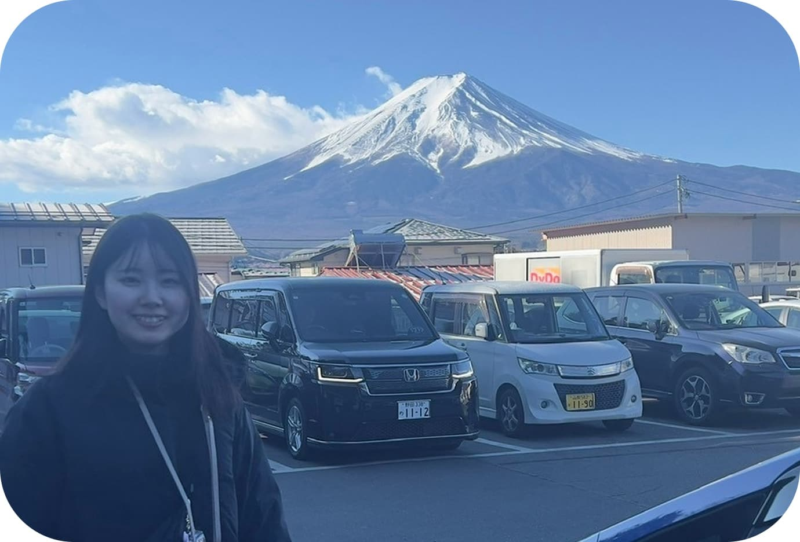
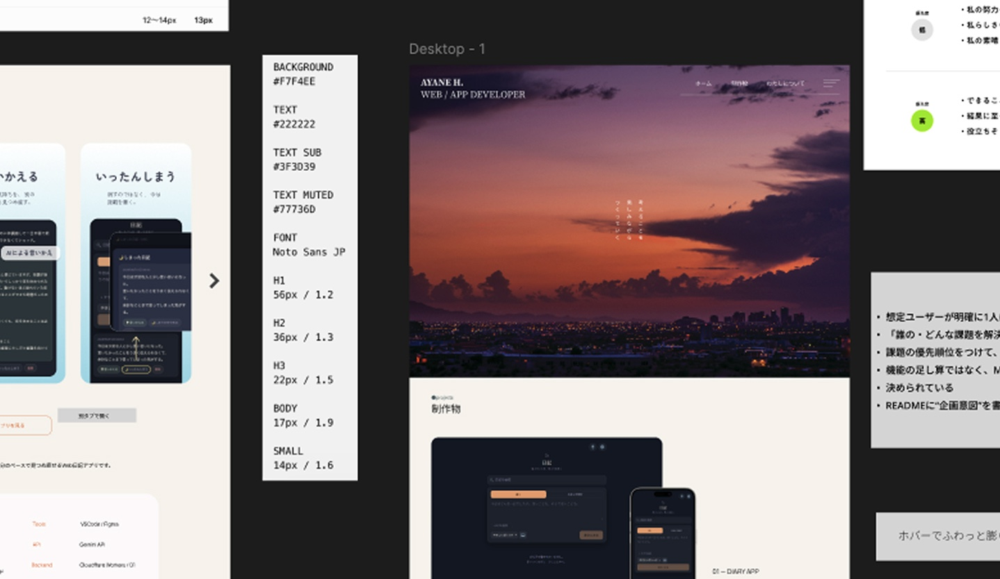
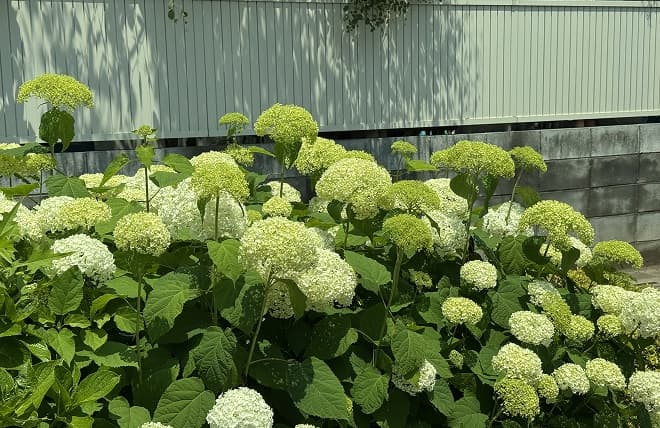
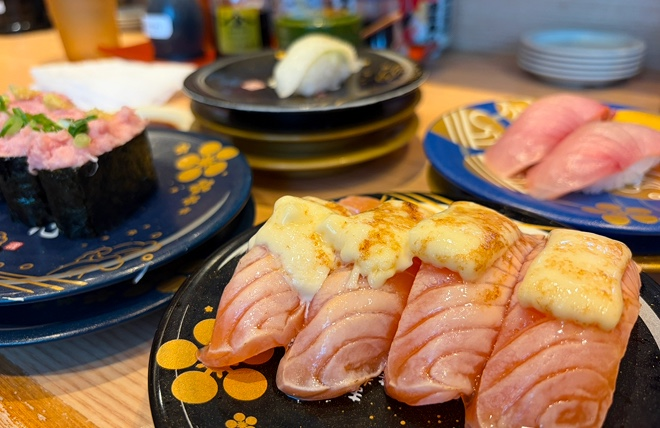
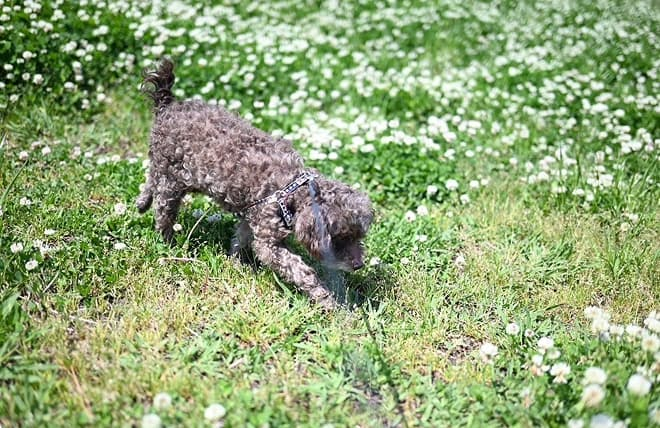

わたしについて
原田 彩音 HARADA AYANE
1997年生まれ、大阪府堺市出身。前職では完全在宅の環境で、採用支援サービスにおけるトークスクリプトの作成や納品進行管理を担当していました。企業や営業担当とのすり合わせを行い、情報を整理して相手に伝わる形にすることを意識して仕事に取り組んできました。
今は職業訓練校でプログラミングを学びながら、個人でもWebサイトやWebアプリケーションの制作に取り組んでいます。


WHY WEB ENGINEER?
アイデアを形にし、
より良いものへ育てていく。
Webエンジニアを目指すようになったのは、Web開発が自分で考えたことを実際に形にし、試しながら改善していける仕事だと知ったことがきっかけです。
実際に学習や制作を始めると、「こんな機能があればいいな」と考えたアイデアを自分で実装し、目に見える形にできることに面白さを感じました。特に、どうすればユーザーにとって使いやすくなるかを考えながら画面をつくっていくフロントエンド開発に興味があります。
BIOGRAPHY
なぜ、その選択をしたのか
-
2016-2020
龍谷大学・哲学専攻
幼いころから「考えること」が好きで、マイケル・サンデル氏の『ハーバード白熱教室』を好んでみていたこともあり、哲学を専攻する
-
2020-2021
リーガロイヤルホテル大阪
祖父が好きだったホテルで、相手のために一歩先を考えて行動するホスピタリティに惹かれ、入社
-
2022-2026
エン株式会社
文章を書くことが好きで、当時はWordPressでブログも制作していた。文章を通して人に情報を届ける仕事に興味を持ち、トークスクリプトの作成を担当
-
2023-NOW
Illustration
母のiPadを借りて絵を描いたことをきっかけに、独学でイラスト制作を開始。学びながら成長していく事が楽しく、制作を続けた結果、SNSの総フォロワーが１万人を超える
-
2026-NOW
Web Engineering
現在は職業訓練校でWebプログラミングを学びながら、Webエンジニアを目指している
LIKES / INTERESTS


